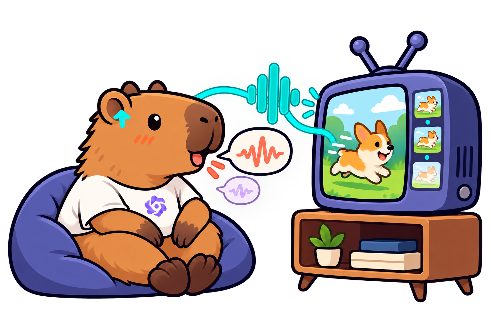

Perceive
Follow visual events, spoken language, scene sounds, and a user's request as they arrive.
Benchmarking Proactive and Agentic Interaction in Continuous Omnimodal Streams
Omni-InteractScope asks models to follow unfolding video and audio, decide when to act, and give a useful response at the right moment.

THE QUESTION
Unlike a single question about a finished clip, each interaction has an unfolding stream and a moment when a response becomes useful.
Follow visual events, spoken language, scene sounds, and a user's request as they arrive.
Track what has changed and choose whether the moment calls for a response, a tool, or continued observation.
Deliver the right content within the annotated window, including successive responses when a task needs them.
INTERACTION, UNFOLDED
Step through a schematic stream. Each moment reveals what the assistant has observed and whether it should speak.
“Tell me when the crossing signal turns green.”
The signal has not changed yet. The assistant keeps watching.
These walkthroughs illustrate the task mechanics; they are not dataset items or model predictions.
TASK LANDSCAPE
Seven groups start from an explicit request. T8 covers assistance, including reminders, audiovisual questions, and stepwise guidance.
Choose the right tool or tools when the scene calls for action.
ACTAlert the user when a requested visual or audio event occurs.
NOTICEInterrupt at the moment a meaningful problem becomes apparent.
INTERVENETrack changing counts or states across an ongoing stream.
TRACKRespond when a specified time relationship has been satisfied.
TIMEInterpret gestures, workflow context, and other unspoken signals.
INFERGive successive, relevant responses as the situation develops.
FOLLOWSupport a person through reminders, questions, and guided interaction.
ASSISTEVALUATION SNAPSHOT
Selected top scores from each model group. The full leaderboard reports all 12 configurations and individual tasks.
Avg. gives equal weight to T1–T4, T6 and T7. T5 is reported separately in the full leaderboard.
Scores are drawn from the repository's reference leaderboard. The two tabs use different metrics and should be read separately.
EVALUATION LOGIC
A response needs to say the right thing and arrive when the underlying event or need is actionable.
Targets require matching content within a time window. The headline Avg. summarizes T1–T4, T6 and T7; T5 uses a separate temporal protocol.
T8 reports timely recall of reference targets. Guided interactions also count how many entire sequences were covered.
EXPLORE THE PROJECT
Find the evaluation code, dataset, task definitions, and results in their maintained repositories.